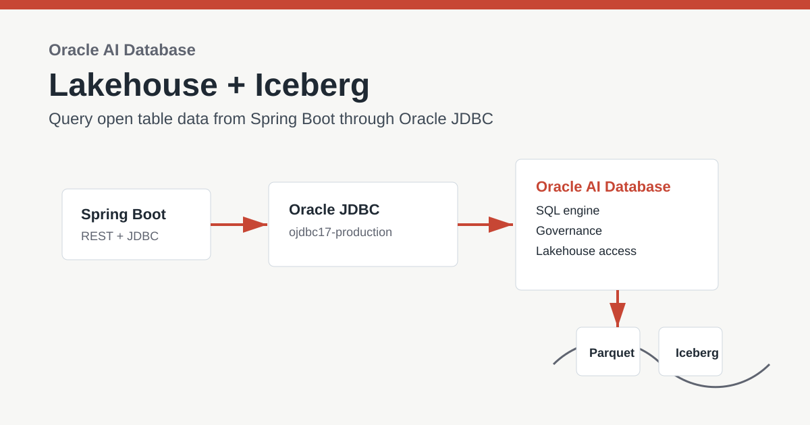
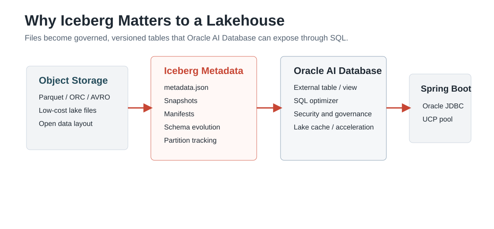
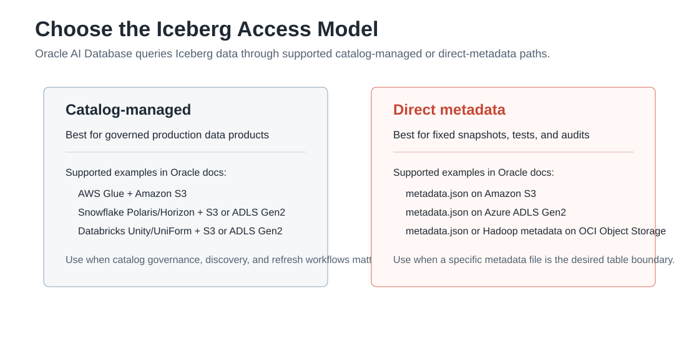

Oracle AI Database Lakehouse
Build a Spring Boot Lakehouse App with Oracle AI Database, Oracle JDBC, and Iceberg Tables
A practical Spring Boot demo for querying Iceberg-backed lakehouse data through Oracle SQL and ordinary JDBC.
All source code, configuration, SQL setup scripts, and the sample Spring Boot app are available in the lakehouse folder on GitHub.

Key Takeaways
- Apache Iceberg gives object-store data table semantics: schema evolution, snapshots, partitioning, and multi-engine access.
- A lakehouse combines data lake storage economics with data warehouse-style SQL, governance, and analytics.
- Oracle Autonomous AI Lakehouse combines Autonomous AI Database with open lakehouse access for AI and analytics across cloud and lakehouse data.
- The sample app uses Spring Boot, Oracle JDBC production dependencies, and Oracle UCP to query a configured Iceberg-backed Oracle table or view.
Why Iceberg Matters to a Lakehouse
A data lake is great for storing files cheaply, but files alone do not behave like governed database tables. Apache Iceberg fills that gap by adding table metadata over files such as Parquet. That metadata tracks schema, snapshots, manifests, partitions, and data files so multiple engines can safely work with the same analytical table.
A lakehouse builds on that idea. It keeps data in open lake storage while adding the SQL access, governance, and operational patterns people expect from a warehouse. In the Oracle world, Oracle AI Database can be the SQL engine and governance point for lakehouse data, while applications still connect through the familiar Oracle JDBC path.

Where Oracle Autonomous AI Lakehouse Fits
Oracle Autonomous AI Lakehouse is Oracle's managed lakehouse service shape for running AI and analytics across database data, object-store data, and open lakehouse table formats. Oracle describes the service as combining Autonomous AI Database with vendor-independent Apache Iceberg so teams can analyze data across OCI, AWS, Azure, Google Cloud, and Exadata Cloud@Customer without forcing every application to learn a new data-access stack.
For developers, the important part is the boundary. Oracle AI Database handles the lakehouse integration:
credentials, object storage access, catalogs, external table metadata, optimization, security, and governance.
The Spring Boot service sees a normal Oracle SQL object and keeps using Oracle JDBC. That means the same app can
work first against a regular smoke-test table, then later against an Iceberg-backed external table simply by
changing ICEBERG_TABLE_NAME.
| Layer | Responsibility |
|---|---|
| Object storage and Iceberg metadata | Stores Parquet/ORC/AVRO data files, Iceberg metadata, snapshots, and manifests. |
| Catalog or metadata pointer | Resolves table metadata through a supported catalog such as AWS Glue, Snowflake Polaris/Horizon, Databricks Unity/UniForm, Hadoop-style metadata, or a direct metadata.json pointer. |
| Oracle Autonomous AI Database | Creates the external table or view, applies database security, and exposes the lakehouse data through SQL. |
| Spring Boot and Oracle JDBC | Connects through UCP and queries the configured SQL object without parsing Iceberg metadata in Java. |

What the Spring Boot App Demonstrates
The app in this folder does not parse Iceberg metadata or read Parquet files directly. Instead, it assumes Oracle AI Database exposes an Iceberg-backed table or view. The app connects through Oracle JDBC and queries that object using normal SQL.
That is the useful developer shape of Oracle JDBC Iceberg table support: the lakehouse integration is handled by Oracle Database, and the Java application keeps using the same JDBC primitives it already knows: a datasource, SQL statements, fetch size, query timeout, and result sets.
curl http://localhost:8080/api/database
curl http://localhost:8080/api/lakehouse/summary
curl 'http://localhost:8080/api/lakehouse/sample?tableName=LAKEHOUSE_DEMO.SALES_ICEBERG&limit=10'Maven Dependencies
The app uses the Oracle JDBC production dependency to keep the driver, wallet/security libraries, and related
runtime artifacts aligned. It also depends directly on ucp17 because the code creates an Oracle UCP
pool explicitly.
<properties>
<java.version>25</java.version>
<oracle.jdbc.version>23.26.2.0.0</oracle.jdbc.version>
<oracle-database.version>${oracle.jdbc.version}</oracle-database.version>
</properties>
<dependency>
<groupId>com.oracle.database.jdbc</groupId>
<artifactId>ojdbc17-production</artifactId>
<version>${oracle.jdbc.version}</version>
<type>pom</type>
</dependency>
<dependency>
<groupId>com.oracle.database.jdbc</groupId>
<artifactId>ucp17</artifactId>
<version>${oracle.jdbc.version}</version>
</dependency>How to Run the Example
- Create or identify an Oracle SQL object that exposes Iceberg-backed lakehouse data. The next section shows the Oracle AI Lakehouse setup shape.
- Clone the repo and enter the
lakehousedirectory. - Copy
.env_exampleto.envand setDB_URL,DB_USERNAME,DB_PASSWORD, andICEBERG_TABLE_NAME. - Build with JDK 25 using
./build.sh. - Start with
./run.sh. - Open
/api/lakehouse/summaryto confirm the app can query the configured Iceberg table.
To smoke-test the app with the financial Autonomous Database before a real Iceberg-backed object is available,
run lakehouse/sql/setup_financial_smoke_test.sql as the FINANCIAL user and set
ICEBERG_TABLE_NAME=LAKEHOUSE_JDBC_SMOKE_TEST. This verifies the wallet, Oracle JDBC 17,
Oracle UCP, metadata endpoint, and sample-row endpoint. It is intentionally labeled as a smoke test because
the table is regular Oracle data, not an Iceberg table.
export DB_URL='jdbc:oracle:thin:@financialdb_high?TNS_ADMIN=/path/to/Wallet_financialdb'
export DB_USERNAME=financial
export DB_PASSWORD='<financial-password>'
export ICEBERG_TABLE_NAME=LAKEHOUSE_JDBC_SMOKE_TEST
./build.sh
./run.sh
curl http://localhost:8080/api/database
curl 'http://localhost:8080/api/lakehouse/objects?nameLike=LAKEHOUSE'
curl http://localhost:8080/api/lakehouse/summaryHow to Set Up Oracle AI Lakehouse for This App
The exact SQL depends on your Iceberg source and catalog. Oracle's Apache Iceberg external table documentation is the source of truth for supported configurations. At a high level, it documents:
- Catalog-managed access with AWS Glue and Amazon S3.
- Catalog-managed access with Snowflake Polaris or Horizon and Amazon S3 or Azure ADLS Gen2.
- Catalog-managed access with Databricks Unity Catalog / UniForm and Amazon S3 or Azure ADLS Gen2.
- Non-catalog access with Hadoop-style metadata on OCI Object Storage.
- Direct
metadata.jsonaccess on Amazon S3, Azure ADLS Gen2, or OCI Object Storage.
Oracle's broader Autonomous AI Lakehouse positioning spans cloud and lakehouse data, but the Iceberg documentation's setup matrix should be used when choosing the object store and catalog combination for this external-table path.
The common setup pattern is:
- Provision or use an Autonomous AI Database or Autonomous AI Lakehouse instance.
- Choose the Iceberg access model: catalog-managed for governed production data products, or direct metadata for fixed-snapshot tests and audits.
- Grant the database schema outbound HTTPS ACL access to only the required hosts, such as object storage, catalog endpoints, token endpoints, or an HTTPS proxy.
- Grant the schema the database role/privileges needed to create and manage external lakehouse tables, commonly including
DWROLEforDBMS_CLOUDoperations. - Create object-store and, when needed, REST catalog credentials with
DBMS_CLOUD.CREATE_CREDENTIAL. - Create the external table with
DBMS_CLOUD.CREATE_EXTERNAL_TABLEand an Iceberg-awareformatJSON document. - Run a quick SQL check such as
select count(*). - Point this Spring Boot app at that SQL object with
ICEBERG_TABLE_NAME.
This direct-metadata example matches Oracle's documented Iceberg access pattern: the
file_uri_list points to an Iceberg metadata.json file, and the
format JSON declares the Iceberg access protocol. The repository includes a
sample shape at lakehouse/sample-iceberg/metadata.json. To run this against a real object store,
upload a complete Iceberg table, including the metadata file, manifest list, manifests, and data files that
the metadata references, then replace the URI with that real metadata file location.
-- 1. Allow the schema to reach the required HTTPS endpoint.
BEGIN
DBMS_NETWORK_ACL_ADMIN.APPEND_HOST_ACE(
host => 'objectstorage.<region>.oraclecloud.com',
lower_port => 443,
upper_port => 443,
ace => xs$ace_type(
privilege_list => xs$name_list('http'),
principal_name => 'LAKEHOUSE_DEMO',
principal_type => xs_acl.ptype_db));
END;
/
-- 2. Grant the app/lakehouse schema the role needed for DBMS_CLOUD operations.
GRANT DWROLE TO LAKEHOUSE_DEMO;
-- 3. Create credentials for the object store, and catalog credentials if required.
BEGIN
DBMS_CLOUD.CREATE_CREDENTIAL(
credential_name => 'OBJECT_STORE_CRED',
username => '<object-store-user-or-key-id>',
password => '<object-store-secret>');
END;
/
-- 4. Create an Iceberg-backed external table.
BEGIN
DBMS_CLOUD.CREATE_EXTERNAL_TABLE(
table_name => 'SALES_ICEBERG',
credential_name => 'OBJECT_STORE_CRED',
file_uri_list => 'https://objectstorage.<region>.oraclecloud.com/n/<namespace>/b/<bucket>/o/lakehouse/sales_iceberg/metadata.json',
format => '{"access_protocol":{"protocol_type":"iceberg"}}');
END;
/
SELECT COUNT(*) FROM SALES_ICEBERG;Once that query works in SQL, the Java app does not need special Iceberg logic:
export ICEBERG_TABLE_NAME=LAKEHOUSE_DEMO.SALES_ICEBERG
./run.sh
curl http://localhost:8080/api/lakehouse/summaryPerformance and Governance Options
For larger lakehouse workloads, Oracle documents Data Lake Accelerator and Lake Cache as database-side options. Data Lake Accelerator can offload scans of external data stored in object stores, while Lake Cache can keep frequently accessed external data local to Autonomous AI Database. Those are database-tier choices; the Spring Boot code remains the same because the application still queries a SQL table or view.
Production Notes
- Use a database wallet, vault, or secret manager for credentials.
- Grant the application user only the lakehouse tables or views it needs.
- Prefer views or synonyms when you want a stable application-facing name over evolving lakehouse objects.
- Set JDBC fetch size based on expected row width and network latency.
FAQ
Does the Java app need to understand Iceberg files?
No. Oracle AI Database exposes the lakehouse/Iceberg data as SQL objects. The Java app uses Oracle JDBC and SQL.
Why use the Oracle JDBC production dependency?
It keeps the driver, wallet/security libraries, and related runtime artifacts aligned, while ucp17 supplies the explicit UCP pool used by this demo.
Can this work with Autonomous Database?
Yes, when the database environment is configured with the relevant lakehouse/Iceberg support and the app can connect to it.
Does the app change when I move from the smoke-test table to an Iceberg-backed table?
Usually no. After Oracle AI Database exposes the Iceberg-backed data as a SQL object, change ICEBERG_TABLE_NAME and keep the JDBC code the same.
Where is the source code?
The sample lives in the repository under lakehouse.